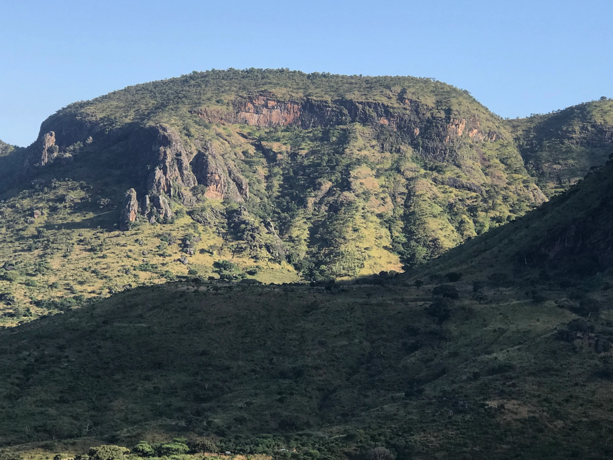

Mount Moroto feels like a hike into a different version of Uganda. Karamoja has its own atmosphere, shaped by distance, dry beauty, strong cultural identity, and a sense that tourism has not yet smoothed the edges. The mountain rises out of that mood with a stern, rocky confidence.
Hiking here is rewarding because the scenery carries an honesty that cannot be staged. The terrain is rugged, the light can be hard and beautiful, and the views over the surrounding region emphasize just how expansive northeastern Uganda can feel. It is adventure with character, not decoration.
For travelers who want places that feel less expected and more self-possessed, Moroto has real power.
Why Karamoja Changes The Experience
The region gives the hike context. This is not simply a mountain outside the usual route. It is part of a wider landscape of distinctive culture, harsher beauty, and travel that still feels exploratory. That regional identity deepens every step.
Moroto is therefore as much about place as it is about altitude.
A Strong Choice For Travelers Wanting Difference
Many Uganda itineraries cluster in the southwest or around classic parks. Karamoja offers a completely different atmosphere, and Moroto is one of the clearest ways to feel that difference physically. It broadens the idea of what Uganda can be.
For seasoned travelers especially, that freshness can be deeply appealing.
Why Moroto Stays With People
What remains afterward is usually the mood: dry ridges, big air, long views, and the feeling of having stepped somewhere more raw than the routes most visitors know. It is not a mountain everyone chooses, which is part of why it feels so satisfying.
If you want adventure with regional soul, Moroto is one of Uganda's boldest options.